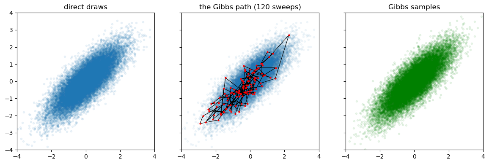
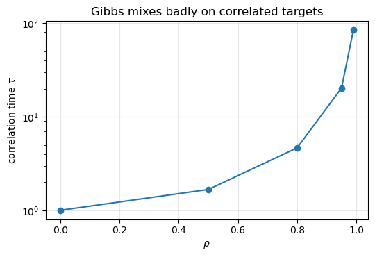
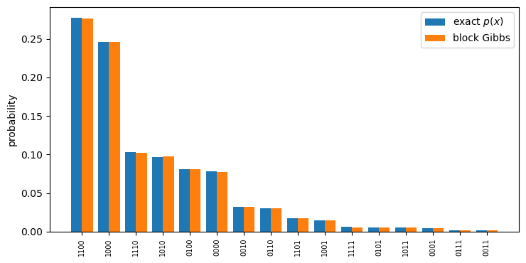
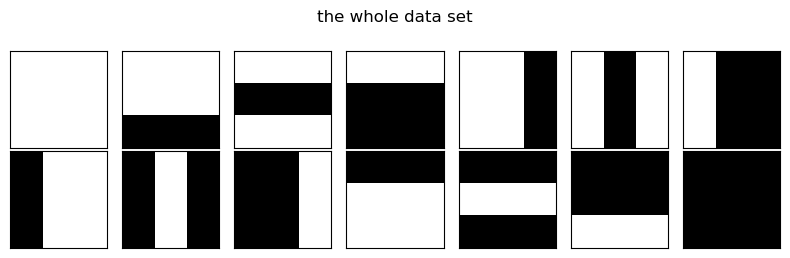
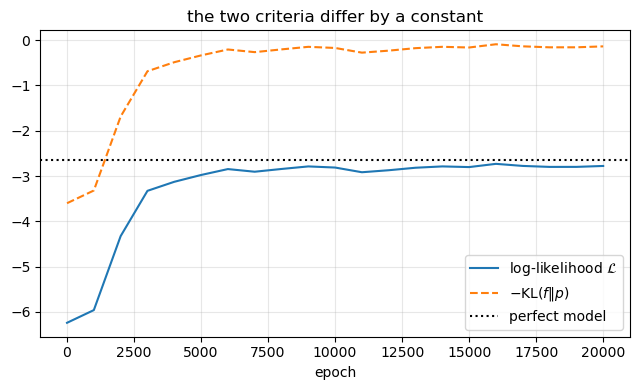
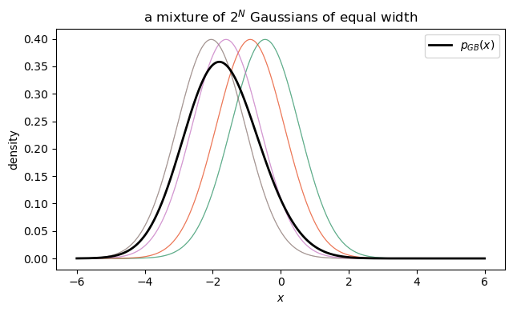
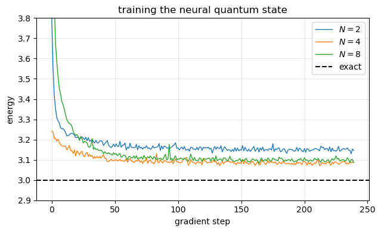
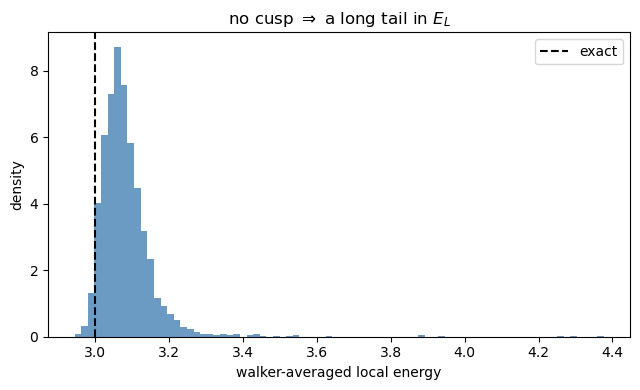

18. Boltzmann machines and generative models#
Executable companion to chapter 17.
Every method so far in this book has begun with a guess — a Slater determinant, an exponential ansatz, a Padé–Jastrow factor — built from physics. The guesses are why the methods work and also why they stop where they do. This chapter does the opposite: write down a family of distributions flexible enough to contain almost anything, and learn which member we want.
Three strands:
Generative models in general — what it means to learn a distribution, and the one formula that drives all energy-based training: the gradient as a difference between an average over the data and an average over the model.
Gibbs sampling — the model average needs samples from a distribution known only up to normalisation.
Restricted Boltzmann machines and neural quantum states — and then the step that concerns us: using an RBM as a variational wave function for the quantum dot of chapters 11 and 13.
import sys
import sys, os, glob
# the chapter programs live in BookPrograms/chapterNN; put them all on the path
for _d in sorted(glob.glob(os.path.join("..", "BookManybody",
"BookPrograms", "chapter*"))):
if _d not in sys.path:
sys.path.insert(0, _d)
import itertools
import math
import numpy as np
import matplotlib.pyplot as plt
import rbm as bm
from vmcoptimise import blocking
18.1. 1. Energy-based models#
Introduce visible variables \(\bm{x}\) and hidden variables \(\bm{h}\), and a joint distribution
For binary variables \(Z\) is a sum of \(2^{M+N}\) terms — for a \(28\times28\) image, \(2^{784}\). This is the whole problem. Everything else is an attempt to avoid computing \(Z\).
We want to maximise the log-likelihood of the data,
The second term looks hopeless, but writing \(f = e^{\log f}\) (legitimate since \(f \ge 0\)),
An intractable derivative of an intractable sum is an expectation value — and expectation values are what Monte Carlo is for. Hence the central result,
a difference of moments. At the optimum the model reproduces the data moments exactly — which is the classical characterisation of a Boltzmann distribution, arrived at from the other direction.
Minimising the Kullback–Leibler divergence from the data is the same thing:
and the first term does not depend on \(\bm{\Theta}\). We check this numerically in section 4.
18.2. 2. Gibbs sampling#
The conditional of a distribution known up to normalisation is known exactly: \(Z\) cancels between numerator and denominator in
Gibbs sampling draws one variable at a time from that conditional. It leaves \(\pi\) invariant (three lines, using only that a conditional is normalised), satisfies detailed balance, and — proposing from the exact conditional in a Metropolis–Hastings framework —
so it never rejects. Let us check the claim that alternating exact conditional draws reconstructs the joint, on a bivariate Gaussian where the answer is known.
mean = np.array([0.0, 0.0])
cov = np.array([[1.0, 0.8], [0.8, 1.0]])
rng = np.random.default_rng(2024)
direct = (np.linalg.cholesky(cov) @ rng.normal(size=(2, 200000))).T + mean
gibbs = bm.gibbs_bivariate_gaussian(mean, cov, 200000,
rng=np.random.default_rng(7))
print(f"{'quantity':>14s} {'exact':>9s} {'direct':>10s} {'Gibbs':>10s}")
print(f"{'mean x':>14s} {0.0:9.4f} {direct[:,0].mean():10.4f} {gibbs[:,0].mean():10.4f}")
print(f"{'var x':>14s} {1.0:9.4f} {direct[:,0].var():10.4f} {gibbs[:,0].var():10.4f}")
print(f"{'correlation':>14s} {0.8:9.4f} {np.corrcoef(direct.T)[0,1]:10.4f} "
f"{np.corrcoef(gibbs.T)[0,1]:10.4f}")
short = bm.gibbs_bivariate_gaussian(mean, cov, 120, rng=np.random.default_rng(7))
fig, axes = plt.subplots(1, 3, figsize=(12, 3.8), sharex=True, sharey=True)
axes[0].plot(*direct[:20000].T, ".", alpha=0.08); axes[0].set_title("direct draws")
axes[1].plot(*direct[:20000].T, ".", alpha=0.05)
axes[1].plot(*short.T, "k-", lw=0.8); axes[1].plot(*short.T, "r.", ms=4)
axes[1].set_title("the Gibbs path (120 sweeps)")
axes[2].plot(*gibbs[:20000].T, ".", alpha=0.08, color="green")
axes[2].set_title("Gibbs samples")
for ax in axes: ax.axis([-4, 4, -4, 4]); ax.set_aspect("equal")
plt.tight_layout(); plt.show()
quantity exact direct Gibbs
mean x 0.0000 0.0001 0.0014
var x 1.0000 0.9998 0.9977
correlation 0.8000 0.7994 0.8005

The middle panel shows the price: Gibbs moves one coordinate at a time, so on a correlated ridge it advances in axis-parallel steps and creeps. The correlation time grows fast with \(\rho\).
def tau_of(series, max_lag=400):
d = series - series.mean()
var = float(np.dot(d, d) / len(d))
tau, k = 1.0, 1
while k < max_lag:
r = float(np.dot(d[:-k], d[k:]) / len(d) / var)
if r < 0.0:
break
tau += 2.0 * r
k += 1
return tau
rhos = [0.0, 0.5, 0.8, 0.95, 0.99]
taus = []
for rho in rhos:
c = np.array([[1.0, rho], [rho, 1.0]])
s = bm.gibbs_bivariate_gaussian(mean, c, 40000, rng=np.random.default_rng(3))[:, 0]
taus.append(tau_of(s))
print(f"rho = {rho:5.2f} tau = {taus[-1]:8.2f}")
plt.figure(figsize=(5.5, 3.8))
plt.semilogy(rhos, taus, "o-")
plt.xlabel(r"$\rho$"); plt.ylabel(r"correlation time $\tau$")
plt.title("Gibbs mixes badly on correlated targets")
plt.grid(alpha=0.3); plt.tight_layout(); plt.show()
rho = 0.00 tau = 1.00
rho = 0.50 tau = 1.67
rho = 0.80 tau = 4.66
rho = 0.95 tau = 20.32
rho = 0.99 tau = 84.45

18.2.1. Gibbs against Metropolis, and a cautionary tale#
Both are correct. They differ in that Gibbs never rejects — and at low temperature that is worth a great deal.
print(f"{'beta':>6s} {'exact e':>11s} {'Gibbs':>11s} {'Metropolis':>12s} {'accept':>9s}")
for beta in (0.25, 0.5, 1.0, 2.0):
exact = bm.ising_chain_exact(20, beta)
g = bm.gibbs_ising_chain(20, beta, n_sweeps=20000, rng=np.random.default_rng(1))
m = bm.metropolis_ising_chain(20, beta, n_sweeps=20000, rng=np.random.default_rng(1))
print(f"{beta:6.2f} {exact:11.5f} {g['energy']:11.5f} {m['energy']:12.5f} "
f"{m['acceptance']:9.1%}")
beta exact e Gibbs Metropolis accept
0.25 -0.24492 -0.24565 -0.24554 75.5%
0.50 -0.46212 -0.46266 -0.46204 53.7%
1.00 -0.76396 -0.76679 -0.76577 23.4%
2.00 -0.98782 -0.98998 -0.98905 1.1%
# Metropolis accepts Delta E = 0 with probability ONE. On the Ising chain that
# move is a domain wall hopping one site, so under a deterministic sweep all
# walls move in lockstep, never meet, never annihilate -- and the chain is not
# ergodic.
print(f"{'beta':>6s} {'exact e':>11s} {'random order':>14s} {'in-order sweep':>16s}")
for beta in (0.5, 2.0):
exact = bm.ising_chain_exact(20, beta)
good = bm.metropolis_ising_chain(20, beta, n_sweeps=5000,
rng=np.random.default_rng(1))
bad = bm.metropolis_ising_chain(20, beta, n_sweeps=5000,
rng=np.random.default_rng(1),
random_order=False)
print(f"{beta:6.2f} {exact:11.5f} {good['energy']:14.5f} {bad['energy']:16.5f}")
print()
print("Gibbs has no such pathology: at zero local field it draws from")
print("sigmoid(0) = 1/2 rather than flipping with certainty. Drawing from the")
print("conditional and accepting a proposal are not always the same thing.")
beta exact e random order in-order sweep
0.50 -0.46212 -0.46648 0.02212
2.00 -0.98782 -0.99328 0.00004
Gibbs has no such pathology: at zero local field it draws from
sigmoid(0) = 1/2 rather than flipping with certainty. Drawing from the
conditional and accepting a proposal are not always the same thing.
18.3. 3. Restricted Boltzmann machines#
A Boltzmann machine is a generalised Ising model with the couplings promoted from constants of nature to parameters to be fitted. Deleting the intra-layer couplings leaves a bipartite graph,
with the one consequence everything depends on:
Summing the joint over the \(2^N\) hidden configurations factorises into \(N\) two-term sums, because there is no \(h_jh_{j'}\) coupling:
and dividing the joint by this gives
The sigmoid is not an activation function chosen for convenience. It is the exact conditional probability of a binary variable whose energy is linear in that variable, and its argument is the local field. A layer of an RBM computing sigmoids is a set of spins coming to thermal equilibrium in the field of the layer below.
Let us check every closed form against brute-force enumeration.
machine = bm.BinaryBinaryRBM(6, 4, rng=np.random.default_rng(1), scale=0.8)
checks = machine.check_identities()
for key, label in (("partition", "Z from free energy vs. brute force"),
("marginal_x", "p(x) enumerated vs. closed form"),
("normalisation_x", "sum_x p(x) - 1"),
("normalisation_h", "sum_h p(h) - 1"),
("conditional_factorisation", "p(x,h) - p(x) prod_j p(h_j|x)")):
print(f"{label:<42s} {checks[key]:.2e}")
print()
print("The last line is the important one: the hidden units really are")
print("conditionally independent given the visible ones. That is what the")
print("missing lateral couplings buy, and it is what makes block Gibbs work.")
Z from free energy vs. brute force 5.61e-16
p(x) enumerated vs. closed form 6.94e-17
sum_x p(x) - 1 2.22e-16
sum_h p(h) - 1 3.33e-16
p(x,h) - p(x) prod_j p(h_j|x) 1.04e-17
The last line is the important one: the hidden units really are
conditionally independent given the visible ones. That is what the
missing lateral couplings buy, and it is what makes block Gibbs work.
# Block Gibbs on the machine itself, against its exact marginal
small = bm.BinaryBinaryRBM(4, 3, rng=np.random.default_rng(2), scale=1.2)
exact = small.marginal_x()
draws = small.gibbs(400000, rng=np.random.default_rng(9))
states = bm.all_binary_states(4)
index = {tuple(s): i for i, s in enumerate(states)}
empirical = np.zeros(len(states))
for row in draws:
empirical[index[tuple(row)]] += 1.0
empirical /= len(draws)
order = np.argsort(-exact)
plt.figure(figsize=(7.5, 3.8))
w = 0.4
plt.bar(np.arange(16) - w/2, exact[order], w, label="exact $p(x)$")
plt.bar(np.arange(16) + w/2, empirical[order], w, label="block Gibbs")
plt.xticks(range(16), ["".join(str(int(v)) for v in states[i]) for i in order],
rotation=90, fontsize=7)
plt.ylabel("probability"); plt.legend(); plt.tight_layout(); plt.show()
print(f"largest absolute deviation {np.abs(exact-empirical).max():.5f}")

largest absolute deviation 0.00100
18.4. 4. Training: contrastive divergence#
The positive phase is free — clamp the visible units to the data and evaluate the sigmoid. The negative phase needs samples from the model, and the only route is a Markov chain. Running it to equilibrium at every gradient step is far too slow, so contrastive divergence runs \(k\) Gibbs steps started at the data instead. This is a biased estimate of the gradient — it is not the gradient of anything — and it works.
The test bed is bars and stripes on a \(3\times3\) grid: the 14 images out of 512 whose rows are constant or whose columns are constant. With nine visible units \(Z\) can be summed exactly, so the log-likelihood and the KL divergence are known at every step, and the identity \({\rm KL} = \langle\log f\rangle + \mathcal{C}_{LL}\) can be watched holding.
data = bm.bars_and_stripes(3)
print(f"{len(data)} patterns out of {2**9}")
fig, axes = plt.subplots(2, 7, figsize=(8, 2.6))
for ax, pattern in zip(axes.ravel(), data):
ax.imshow(pattern.reshape(3, 3), cmap="binary", vmin=0, vmax=1)
ax.set_xticks([]); ax.set_yticks([])
plt.suptitle("the whole data set"); plt.tight_layout(); plt.show()
14 patterns out of 512

machine, data, history = bm.train_bars_and_stripes(
n_hidden=8, epochs=20000, learning_rate=0.1, k=5, report_every=1000)
target = math.log(1.0 / len(data))
print(f"a perfect model: log-likelihood {target:.4f}, KL 0\n")
print(f"{'epoch':>8s} {'log-likelihood':>16s} {'KL(f||p)':>12s}")
for epoch, ll, kl in history[::4]:
print(f"{epoch:8d} {ll:16.4f} {kl:12.4f}")
epochs = [h[0] for h in history]
fig, ax = plt.subplots(figsize=(6.5, 4))
ax.plot(epochs, [h[1] for h in history], label=r"log-likelihood $\mathcal{L}$")
ax.plot(epochs, [-h[2] for h in history], "--", label=r"$-\mathrm{KL}(f\|p)$")
ax.axhline(target, color="k", ls=":", label="perfect model")
ax.set_xlabel("epoch"); ax.legend(); ax.grid(alpha=0.3)
ax.set_title("the two criteria differ by a constant")
plt.tight_layout(); plt.show()
print(f"\nthe constant is the entropy of the data, -log(1/14) = {-target:.4f}")
print(f"model probability on the 14 valid patterns: "
f"{float(np.sum(machine.marginal_x_formula(data))):.1%} "
f"(random: {14/512:.1%})")
a perfect model: log-likelihood -2.6391, KL 0
epoch log-likelihood KL(f||p)
0 -6.2386 3.5995
4000 -3.1271 0.4880
8000 -2.8440 0.2050
12000 -2.8718 0.2328
16000 -2.7309 0.0918
20000 -2.7775 0.1385

the constant is the entropy of the data, -log(1/14) = 2.6391
model probability on the 14 valid patterns: 97.9% (random: 2.7%)
# The number of Gibbs steps in CD-k matters
print(f"{'k':>4s} {'log-likelihood':>16s} {'KL(f||p)':>12s}")
for k in (1, 2, 5, 10):
_, _, h = bm.train_bars_and_stripes(n_hidden=8, epochs=20000,
learning_rate=0.1, k=k,
report_every=20000)
print(f"{k:4d} {h[-1][1]:16.4f} {h[-1][2]:12.4f}")
print()
print("CD-1 is the cheapest and the most biased: one Gibbs step from the data")
print("is nowhere near the model's equilibrium. It still works, which is the")
print("surprising and much-discussed fact about the algorithm.")
k log-likelihood KL(f||p)
1 -3.3710 0.7319
2 -3.0410 0.4019
5 -2.7775 0.1385
10 -2.7327 0.0937
CD-1 is the cheapest and the most biased: one Gibbs step from the data
is nowhere near the model's equilibrium. It still works, which is the
surprising and much-discussed fact about the algorithm.
18.5. 5. The Gaussian–binary machine#
Binary visible units are useless for particle coordinates. Let them be real and Gaussian, keeping the hidden units binary:
Marginalising over \(\bm{h}\) is the same factorisation as before; marginalising over \(\bm{x}\) requires a Gaussian integral and completing the square, and gives
The conditionals are the punchline: the hidden units are still sigmoids, but
a Gaussian whose centre the hidden units move but whose width they cannot. The machine is a mixture of \(2^N\) Gaussians all of the same width — remember this in section 7.
_trapz = getattr(np, "trapezoid", None) or np.trapz
gb = bm.GaussianBinaryRBM(1, 3, sigma=1.0, rng=np.random.default_rng(4), scale=0.7)
checks = gb.check_identities()
print(f"p(x): summed over h vs. closed form {checks['marginal_x']:.2e}")
print(f"p(h): integrated over x vs. closed form {checks['marginal_h']:.2e}")
print(f"p(x|h) vs. N(a + Wh, sigma^2) {checks['conditional_density']:.2e}")
# the mixture of Gaussians, drawn
grid = np.linspace(-6, 6, 800).reshape(-1, 1)
plt.figure(figsize=(6.5, 4))
for h in bm.all_binary_states(3):
mu = float(gb.mean_x_given_h(h)[0, 0])
comp = np.exp(-(grid[:, 0] - mu)**2 / 2) / math.sqrt(2 * math.pi)
plt.plot(grid[:, 0], comp, lw=0.8, alpha=0.5)
total = gb.unnormalised_marginal_x(grid)
plt.plot(grid[:, 0], total / _trapz(total, grid[:, 0]), "k", lw=2,
label=r"$p_{GB}(x)$")
plt.xlabel("$x$"); plt.ylabel("density"); plt.legend()
plt.title("a mixture of $2^N$ Gaussians of equal width")
plt.tight_layout(); plt.show()
p(x): summed over h vs. closed form 4.63e-16
p(h): integrated over x vs. closed form 3.78e-14
p(x|h) vs. N(a + Wh, sigma^2) 8.35e-16

18.6. 6. Neural quantum states#
A wave function is a probability amplitude on configuration space; the marginal \(p_{GB}(\bm{x})\) is a probability density on the same space. Identify them, and chapters 13 and 14 do the rest.
Taking \(|\Psi|^2 = F_{rbm}\), so that the sampling density is still an RBM distribution,
There is no data set and no log-likelihood. The cost function is the energy of the quantum system, and the gradient is the covariance of chapter 14. With \(\nabla^2\Psi/\Psi = \nabla^2\ln\Psi + (\nabla\ln\Psi)^2\),
One parameter is not learned and repays thought. Setting all weights to zero leaves \(\Psi \propto \exp(-\sum_m x_m^2/4\sigma^2)\), while the exact non-interacting ground state is \(\exp(-\omega\sum_m x_m^2/2)\). They agree when
With that choice the non-interacting problem is exactly representable and the hidden units have only the correlations left to describe.
d = bm.check_nqs_derivatives()
for key, label in (("grad_x", "d ln Psi / d x_m"),
("laplacian_x", "d^2 ln Psi / d x_m^2"),
("grad_a", "d ln Psi / d a_m"),
("grad_b", "d ln Psi / d b_n"),
("grad_W", "d ln Psi / d w_mn"),
("local_energy", "E_L vs. numerical H Psi / Psi")):
print(f"{label:<32s} {d[key]:.2e}")
d ln Psi / d x_m 1.21e-11
d^2 ln Psi / d x_m^2 4.51e-09
d ln Psi / d a_m 9.84e-12
d ln Psi / d b_n 2.47e-12
d ln Psi / d w_mn 1.58e-11
E_L vs. numerical H Psi / Psi 3.17e-07
18.7. 7. Two electrons in a quantum dot#
The system of chapters 11, 13, 14 and 16: two electrons in a two-dimensional harmonic trap at \(\omega = 1\), exact energy 3 with the Coulomb repulsion and 2 without. \(M = 4\) visible units, \(N\) hidden.
The trial function contains no physics whatever — no determinant, no orbital, no Jastrow factor, no cusp condition, nothing that knows the electrons repel.
First the calibration run: the non-interacting dot must come out at 2 with vanishing variance.
print("Non-interacting, exact 2.000000:")
for n_hidden in (2, 4):
nqs = bm.NeuralQuantumState(2, 2, n_hidden, interaction=False,
rng=np.random.default_rng(17), scale=0.05)
nqs.optimise(learning_rate=0.05, max_iter=60, n_cycles=400, n_walkers=200)
final = nqs.sample(n_cycles=3000, n_walkers=500,
rng=np.random.default_rng(99), keep_samples=True)
err = blocking(final["samples"])[1]
print(f" N = {n_hidden}: E = {final['energy']:.6f} +/- {err:.6f} "
f"variance {final['variance']:.2e}")
print()
print("The variance collapses: the optimiser has found the exact eigenstate,")
print("where E_L is constant. This is the zero-variance principle of ch. 14.")
Non-interacting, exact 2.000000:
N = 2: E = 2.000080 +/- 0.000014 variance 1.21e-04
N = 4: E = 2.000049 +/- 0.000013 variance 1.11e-04
The variance collapses: the optimiser has found the exact eigenstate,
where E_L is constant. This is the zero-variance principle of ch. 14.
print("Interacting, exact 3.000000:")
print(f"{'N':>4s} {'E':>11s} {'error':>10s} {'variance':>10s} {'E - exact':>11s}")
results = []
for n_hidden in (2, 4, 8):
nqs = bm.NeuralQuantumState(2, 2, n_hidden, interaction=True,
rng=np.random.default_rng(17), scale=0.4)
history = nqs.optimise_annealed()
final = nqs.sample(n_cycles=3000, n_walkers=500,
rng=np.random.default_rng(99), keep_samples=True)
err = blocking(final["samples"])[1]
results.append((n_hidden, history, final, err))
print(f"{n_hidden:4d} {final['energy']:11.5f} {err:10.5f} "
f"{final['variance']:10.4f} {final['energy']-3.0:+11.5f}")
fig, ax = plt.subplots(figsize=(6.5, 4))
for n_hidden, history, _, _ in results:
ax.plot([h[1] for h in history], lw=1, label=f"$N={n_hidden}$")
ax.axhline(3.0, color="k", ls="--", label="exact")
ax.set_xlabel("gradient step"); ax.set_ylabel("energy")
ax.set_ylim(2.9, 3.8); ax.legend(); ax.grid(alpha=0.3)
ax.set_title("training the neural quantum state")
plt.tight_layout(); plt.show()
Interacting, exact 3.000000:
N E error variance E - exact
2 3.14840 0.00185 3.3093 +0.14840
4 3.08227 0.00173 3.1227 +0.08227
8 3.09596 0.00171 2.9246 +0.09596

print(f"{'method':>34s} {'energy':>12s} {'error':>12s}")
for label, value in (("Hartree-Fock, 42 orbitals", 3.161921),
("RBM, N=4, no physics input", results[1][2]["energy"]),
("MP2, 42 orbitals", 3.027038),
("CCSD, 42 orbitals", 3.013626),
("VMC, Pade-Jastrow (ch. 14)", 3.000549),
("exact (Taut)", 3.000000)):
print(f"{label:>34s} {value:12.6f} {value-3.0:12.6f}")
# why the variance is so large: the local energy has a 1/r_12 tail
series = results[1][2]["samples"]
plt.figure(figsize=(6.5, 4))
plt.hist(series, bins=80, density=True, color="steelblue", alpha=0.8)
plt.axvline(3.0, color="k", ls="--", label="exact")
plt.xlabel("walker-averaged local energy"); plt.ylabel("density")
plt.title("no cusp $\\Rightarrow$ a long tail in $E_L$")
plt.legend(); plt.tight_layout(); plt.show()
method energy error
Hartree-Fock, 42 orbitals 3.161921 0.161921
RBM, N=4, no physics input 3.082268 0.082268
MP2, 42 orbitals 3.027038 0.027038
CCSD, 42 orbitals 3.013626 0.013626
VMC, Pade-Jastrow (ch. 14) 3.000549 0.000549
exact (Taut) 3.000000 0.000000

18.7.1. Two honest observations#
The Boltzmann machine beats Hartree-Fock. Given no single-particle basis, no orbitals and no notion of antisymmetry, fourteen numbers learned enough of the correlations from the energy alone to do better than a mean-field calculation in a basis of forty-two orbitals.
It is beaten comfortably by the two-parameter Padé–Jastrow function of chapter 13, by a factor of about a hundred and fifty. The reason is the variance column. The Padé–Jastrow function was built to satisfy the cusp condition, so the \(1/r_{12}\) in the Hamiltonian is cancelled exactly by a kinetic term. The RBM is a Gaussian times smooth sigmoidal factors, and no choice of its parameters produces a cusp at \(r_{12}=0\) — so \(E_L\) diverges wherever the electrons meet. The variance is formally infinite and in practice merely enormous. The energy remains a rigorous variational upper bound; it is simply a mediocre one, and expensive to measure.
It would be easy to read this as a defeat for machine learning and easy to read it as a triumph, and both readings would be wrong. A generic ansatz with no physics in it reaches, from a standing start, the accuracy of a carefully constructed mean-field theory — and a small amount of physics, correctly inserted, is still worth more than a large amount of flexibility.
The productive response is not to choose but to combine: a neural network multiplying a Slater determinant and a Jastrow factor, so that the cusp and the antisymmetry are exact by construction and the network supplies what is left. Exercise 8(i) of the chapter is the simplest version, and chapter 18 is the rest.